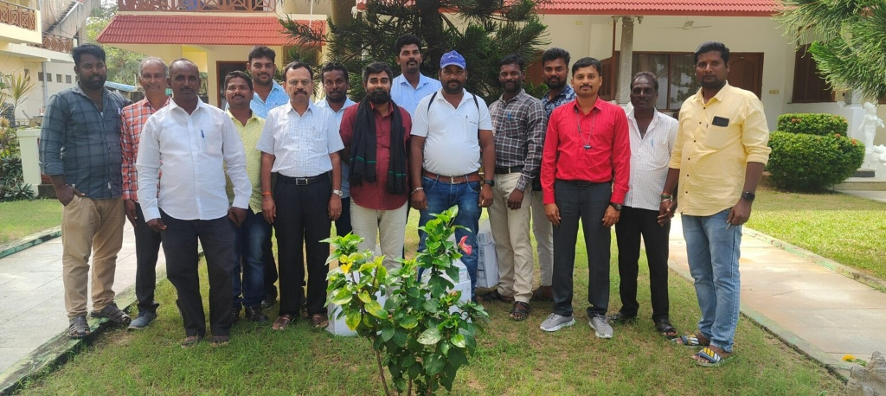
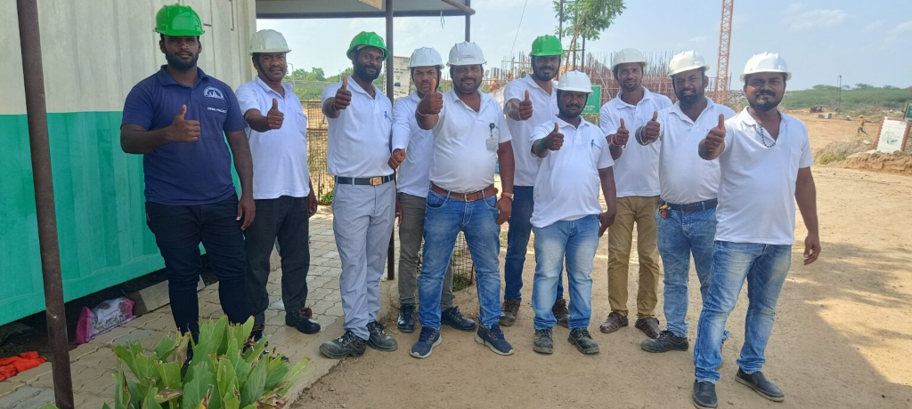
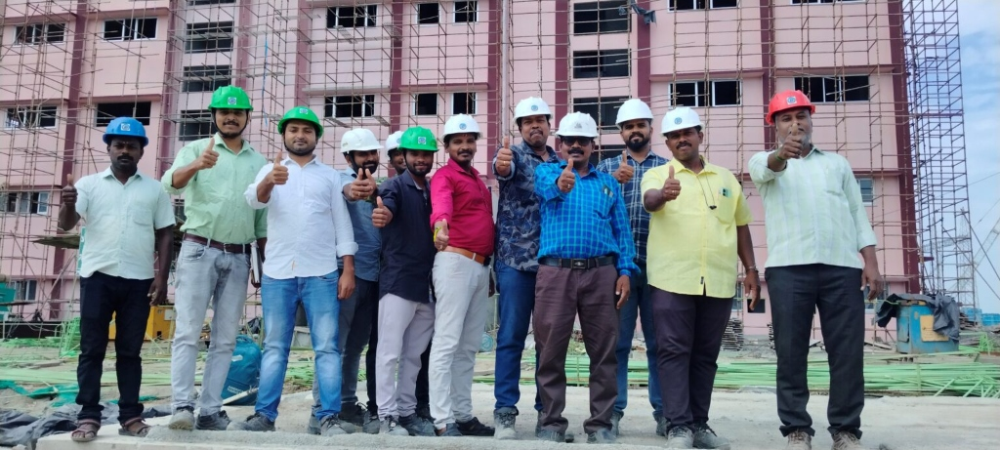

M/s. Sekar Constructions was started in 1995 as a Civil Engineering Construction Company and has undertaken diversified Civil Engineering works:
The Company has achieved a revenue of Rs. 117.50 Crore for the financial year 2024-25 and we are good improvement in turnover for the current financial year 2025-26 achieving 140+ Crores.
The financial credibility of the firm has enabled it to secure a Cash Credit Limit of Rs.10.00 Crore and Bank Guarantee Limit of Rs. 25.00 Crore from HDFC, Kalpakkam. Besides this, we are well supported by Banks and Partners.
Timely Completion of works with best quality and standards has been the specialty of Sekar Constructions and the continuous orders from the department of Atomic Energy is the evidence of our commitment of quality and timely completion.
Shri. E. Sekar, now aged 67 years, the founder of the Company, is a technically experienced leader with over 40 years of service in the field, in India and abroad.
Having worked with international firms like NPCC Abu Dhabi for fifteen years, he acquired tremendous skills, technical knowledge, and management capabilities. Under his dynamic direction for about 30 years, Sekar Constructions has achieved major milestones in quality execution and has grown into a premier Class-I civil contractor.
Smt. S. Sasikala is a large-scale civil material supplier in the region, managing river sand, blue metal, and bricks procurement under the name of M/s. Sasikala Suppliers, securing huge logistics volume.
An enthusiastic entrepreneur, she also owns and manages M/s. Aniruth Industries (Chennai-32), an ISO 9001:2000 certified precision mechanical engineering and machining firm. Our strong logistics association with Smt. Sasikala enables Sekar Constructions to easily procure the best quality building materials locally and from Chennai at highly economical costs.


